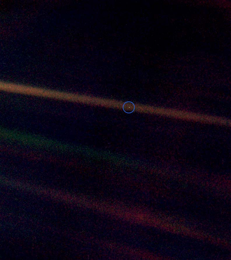
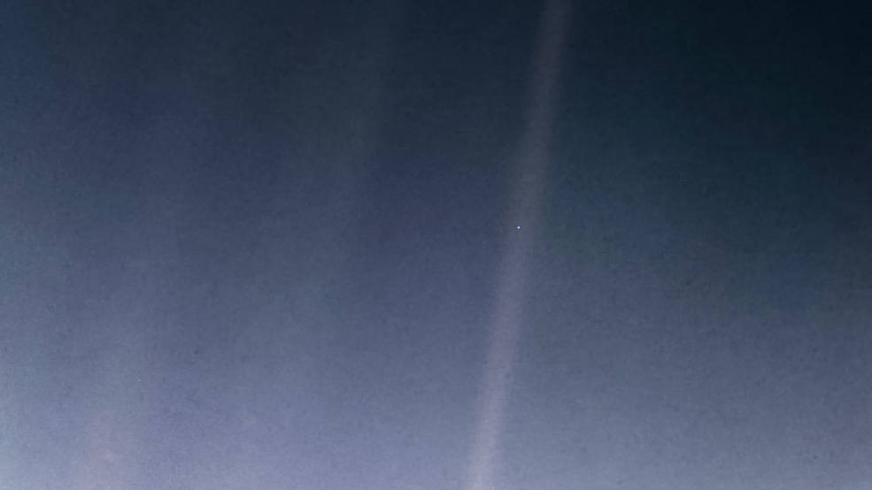

At a distance of about 4 billion miles (6 billion kilometers) from the sun, Voyager 1 takes the last images of the mission: the “Solar System Family Portrait.” It is the only series of images that captures Venus, Earth, Jupiter, Saturn, Uranus and Neptune arrayed about the sun.

Solar System Portrait - Earth as 'Pale Blue Dot'
Earth is captured as a tiny speck in a beam of scattered sunlight, inspiring Carl Sagan to think about the fragility and uniqueness of our home planet, “a pale blue dot.” After the images are transmitted from the spacecraft in real-time on this day, engineers turn off Voyager 1’s cameras because they want to use the power, computer memory and data rate for other instruments that collect key data on the solar wind and interstellar space. The spacecraft will never fly close enough to any astronomical object to take images again.

This updated version of the iconic "Pale Blue Dot" image taken by the Voyager 1 spacecraft uses modern image-processing software and techniques to revisit the well-known Voyager view while attempting to respect the original data and intent of those who planned the images.
In his 1994 book, Pale Blue Dot, Carl Sagan comments on what he sees as the greater significance of the photograph, writing:
From this distant vantage point, the Earth might not seem of any particular interest. But for us, it's different. Consider again that dot. That's here. That's home. That's us. On it everyone you love, everyone you know, everyone you ever heard of, every human being who ever was, lived out their lives. The aggregate of our joy and suffering, thousands of confident religions, ideologies, and economic doctrines, every hunter and forager, every hero and coward, every creator and destroyer of civilization, every king and peasant, every young couple in love, every mother and father, hopeful child, inventor and explorer, every teacher of morals, every corrupt politician, every "superstar," every "supreme leader," every saint and sinner in the history of our species lived there--on a mote of dust suspended in a sunbeam.
The Earth is a very small stage in a vast cosmic arena. Think of the rivers of blood spilled by all those generals and emperors so that in glory and triumph they could become the momentary masters of a fraction of a dot. Think of the endless cruelties visited by the inhabitants of one corner of this pixel on the scarcely distinguishable inhabitants of some other corner. How frequent their misunderstandings, how eager they are to kill one another, how fervent their hatreds. Our posturings, our imagined self-importance, the delusion that we have some privileged position in the universe, are challenged by this point of pale light. Our planet is a lonely speck in the great enveloping cosmic dark. In our obscurity– in all this vastness– there is no hint that help will come from elsewhere to save us from ourselves.
The Earth is the only world known, so far, to harbor life. There is nowhere else, at least in the near future, to which our species could migrate. Visit, yes. Settle, not yet. Like it or not, for the moment, the Earth is where we make our stand. It has been said that astronomy is a humbling and character-building experience. There is perhaps no better demonstration of the folly of human conceits than this distant image of our tiny world. To me, it underscores our responsibility to deal more kindly with one another and to preserve and cherish the pale blue dot, the only home we've ever known.